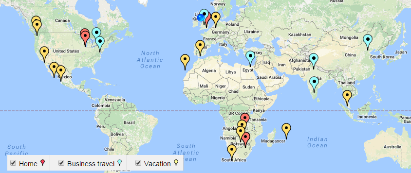

Business savvy technology leader who has helped to drive both business and technology strategy, through understanding the business challenges and collaborating with business leaders to identify solutions.
Consistently found ways to drive competitive advantage and operational efficiencies. Able to establish the optimal technology, processes and skillsets needed to meet the challenges of the business.
Great believer in the power of teamwork and empowering people to fulfill their potential. Servant leadership enabling enthusiastic customer service.
Key Characteristics
Vision
- Identified industry shifts and worked with C-Level executives in elite think tank, to help promote some challenging ideas.
- Brought about a new and competitive business model to market research firm with real-time dashboards that tied into customer operations.
- Created a generic sampling system to enable implementation of large scale, automated customer satisfaction programs.
- Worked with business leaders to create a workflow tool that enabled clients to upload contracts, provide immediate price and timing, kick off the internal processes to perform the work and return to the client.
Leadership
- When I took a senior IT position at a company that had gone through a few years of down-sizing, I had to rebuild numerous teams in both personnel and morale terms. Working with some great recruiters, I was able to bring in some excellent people and get those teams performing at a high level.
- I led the largest account for the consulting company I worked for and helped to grow the account 30% by promoting new ideas with the client.
- In 2009, I attended the SIM RLF (Regional Leadership Forum) which is considered the top IT leadership program in the country.
- Current President of SIM Wisconsin.
Collaboration
- Improved productivity 32% with no external spend by working with VP of data acquisition to optimize available resources.
- Worked with CEO of client, and project team he later set up, to implement an innovation that automated a process to provide quality and performance that was previously inconceivable.
- Created a strong working relationship with a key vendor by sharing with them some of the integrations that enabled us to very accurately staff our call centers. The vendor had us demonstrate what we were able to do with their CEO and technical director.
Innovation
- Built feature rich and complex sampling engine, with ad-hoc query building, reporting, workflow. This replaced, and improved upon, a mainframe-system that was 20 years in the making.
- Built customer satisfaction system to collect and aggregate data, with sophisticated ddata-driven dashboards, providing near real-time data. Used by some of the biggest banks in the country.
- Created resource planning tool to accurately track resource usage and enable tight control of project costs and efficiency
- Developed a distribution system to control and monitor release of software updates, DDL, data feeds.
- Created a plant simulator for multinational chemical and explosives company. This significantly reduced cost and time of sourcing suitable candidates for a stressful job with high turnover.
Employment History
ManpowerGroup ♦ Milwaukee, Wisconsin ♦ Director, NA IT ♦ November 2014 - Present
Global leader in staffing. $20B revenue, approximately 32,000 employees. Milwaukee HQ, with approximately 500 branches in NA, 3,900 worldwide.
Oversee various teams, including Infrastructure, Enterprise Architecture, ERP, Business Intelligence, Business Analysis and Software Development. Work with business technology partners to ensure we are aligned on direction and priority.
- Worked to stop the rot after 2 years of right-sizing before I arrived. Had to rebuild some teams from scratch, brought in and promoted some excellent leaders to create a productive environment and improve morale.
- Meet weekly with the CIO and the other directors to ensure alignment.
- Brought the infrastructure and enterprise architecture function under an excellent new leader who has brought energy and alignment, with numerous high profile projects progressing well.
- Moved our main data center to a managed service provider - this was a huge undertaking that had minimal impact on business operations and a big impact on the bottom line.
- Collaborating with business leaders and sales analysts to greatly improve our business intelligence offerings, while empowering users with intuitive self-service tools.
- Restructured the ERP team and looking to streamline our back-office operations further.
- Working on creating an environment that enables us to more quickly action new ideas from the business. Currently running a pilot program in Azure.
Whyte Hirschboeck Dudek ♦ Milwaukee, Wisconsin ♦ IT Director ♦ February 2013 - November 2014
Large, established law firm, with over 300 employees, that has been around for 70 years. HQ in Milwaukee with a sizeable office in Madison.
Oversee various departments, including IT, Records, Library and Administrative Services. The majority of my time and responsibility rests with the IT Department which consists of 15 professionals mainly at the Milwaukee office.
- Meet weekly with the CE and the other directors to develop strategy and ensure alignment.
- Attend monthly Practice Group meetings to provide updates on initiatives and to encourage input on anything that can positively impact productivity and client service.
- Work with IT managers on the network, infrastructure, software and training side to ensure we are implementing solutions that truly make the firm more productive.
- Rolled out Sharepoint 2010 with a custom dashboard integrated with financial and CRM systems for which we have recieved quiet recognition from industry vendors.
- Achievements over the last 18 months include: Sharepoint 2010, upgrade to Windows 7 and Office 2010 with walk-around interns, Exchange 2010, quick training video initiative, mobile platform roll-out, security audits and upgrades, new WiFi network, core switch upgrade, financial system upgrade. Cisco phone upgrade, Litigation support system, West KM, Sharefile
- Initiatives currently in progress: Monitor Suite Business Intelligence, VDI pilot, Business Development and Project Management strategy (CLOC, LTC4, Sky Analytics).
- Awarded SIM Wisconsin IT Executive of the Year 2013 (Corporate Category) in recognition of the achievements of the department.
Market Probe ♦ Milwaukee, Wisconsin ♦ Senior Vice President, Chief Information Officer ♦ May 2007-January 2012
Rapidly growing provider of market research services (4th fastest globally), through acquisition and organic growth. 12 offices in 9 countries, 1,300 employees.
Recruited to build and lead top performing technical development and support teams focused on creation of both client-facing solutions as well as in-house tools to improve efficiency and management.
- Drove systems design to support generic solutions to improve standard solution offering and reduce customized development. These solutions include web-enabled, data-centric software solutions.
- Improve project bidding mechanism, enable knowledge sharing across the enterprise and make presentations/recommendations to client's senior leaders.
- Supervise a diverse team of 18 technical specialists locally, including infrastructure, telephony and software teams - as well as another 12 developers in India. Integrate technology of companies recently acquired.
- As Division Head, I form part of senior management team with functions including country manager meetings, interviewing senior candidates, assessing acquisitions and major RFPs.
- Heavily involved in all major proposals, presentations and initial high level system design.
- Greatly enhanced department's ability to create industry leading client-facing web-based tools. Web-based Dashboards now considered a key competitive advantage for the company.
- Working with call center team to improve efficiencies and evaluate vendor offerings, including CATI software solutions. Internal solution to improve efficiency of key project by 32%.
- Spearheaded initiative to standardize CATI (and CAWI) system in all North American call centers. Largest technology investment in company's history - realized efficiency improvement up to 60%. A centralized solution that is highly integrated with sampling and reporting systems.
- Established demo web sites and IT capability, FAQ and RFP documentation for client handouts.
- Improved working relationship between IT and the various business departments it supports by establishing relationships and clear communication channels with key individuals.
- Broadened skill sets of tenured IT employees through training and mentor program.
- Implemented project management practices and tools to help manage projects using local and offshore resources. Collaboration tools include JIRA, wiki, Sharepoint, IM, Skype.
- Elevated team performance/morale and overall quality of deliverables with the implementation of functional/strategic tools and methodologies - including project tracking and issue tracking.
- Overseeing key technology initiatives - these include migration of systems to SQL Server and .Net (C# and Visual Basic), virtualization, disaster recovery (including a documented test of our detailed BCP), WAN optimization, Silverlight development.
- Working with other business units to restructure part of organization to ensure efficiency and employee satisfaction and contribution.
Synovate ♦ Chicago, Illinois ♦ Vice President Technology, ViewsNet ♦ November 2004 - May 2007
Leading provider of market research services (8th largest globally). 99 offices and 5,200 employees in 47 countries. Revenues exceed $800M annually.
Promoted to orchestrate development of the organization's original panel management and sampling software to support a new business unit. Coordinate global project teams charged with solutions creation focused on operational/technical strategies integrated in the software development program. Establish project plans ranging from analysis, software development, and integration to database upgrades, data migration, database centralization, and software acquisition. Liaise with user groups to identify necessary system modifications and discrepancies. Research, evaluate, and recommend implementation of new technologies, tools, and services, identifying new business opportunities and strategies for enhancing operations as well as slashing expenditures.
- Cultivate and maintain productive relationships with vendors, review proposals, and perform due diligence. Generate comprehensive technical presentations/recommendations to senior leaders in support of new ventures. Lead efforts of on-shore/off-shore teams throughout development and integration of new system components. Provide planning and reconciliation of software development and maintenance budgets. Support merger of newly acquired companies through assessment/identification of technical resources that could add value to the enterprise.
- Fueled corporate revenues by spearheading successful launch of software for new business unit in 6 Western European countries. Delivered panel management website as well as sampling website with database/backend engine, broadcast, and email management.
- Served an instrumental role in unit exceeding sales target for 2005 by 10%.
- Propelled organization's competitive advantage and visibility through new product introduction.
- Elevated team performance/morale and overall quality of deliverables with the implementation of functional/strategic tools and methodologies as well as establishment of the "Idea Champions" initiative focused on fueling innovation.
- Enhanced operational processes, products, and communication channels through detailed analysis of internal/external customer satisfaction surveys.
- Delivered award-winning and highly recognized systems to General Motors, Army Surgeon General, and American Express.
Synovate ♦ Chicago, Illinois ♦ Director of Applications ♦ March 2004 - November 2004
Leading provider of market research services (8th largest globally). 99 offices and 5,200 employees in 47 countries. Revenues exceed $800M annually.
Recruited to build and lead top performing technical development/support teams focused on the creation of web-enabled, data-centric software solutions. Drove systems design to support customized business platform, contributing to quality, timely, and budget delivery of projects. Generated detailed cost estimates, bid documentation (solution text, transition processes, scheduling), and presentations/recommendations to client's senior leaders. Supervised a team of 14 technical specialists, ensured seamless integration of new tools into existing systems, liaised with outsourced vendors throughout software development lifecycle, and enforced compliance with guidelines/regulations/priorities.
- Captured additional revenues through skillful cultivation and enhancement of relationships with potential clients, supporting pre-sales customer site visits, proposal development, and due diligence efforts.
- Enhanced performance of development team through innovative conceptualization and implementation of functional/strategic tools, methodologies, and guidelines.
- Spearheaded award-winning development operations for 3 major clients.
- Led successful turnaround of a large-scale, at risk project for American Express covering 24 countries, 18 languages, and 156 users. This project achieved Aegis award for superior performance and contributions.
- Saved a key account through careful review of client requirements/needs and implementation of new plans/strategies to ensure deliverables compliant with individual standards.
- Orchestrated successful migration of assigned unit to a new corporate location, achieving relocation of assigned resources on time.
InfoPower Systems ♦ Deerfield, Illinois ♦ Technical Director ♦ February 1997 - March 2004
Provider of software development and consulting services to diverse clientele base encompassing MarketFacts (Synovate) and Allstate. Annual revenues total over $5M.
Delivered advanced management of the organization's largest client encompassing coordination of more than 14 consultants working on site. Provided expert consulting services to clients in the areas of best practices, database/application design, and integration issues. Introduced system enhancements, managed mission-critical/complex projects, and supported clients on the attainment of technical goals. Facilitated expense reductions, troubleshooting of technical issues, and identification of new business opportunities through expert recommendations to senior leaders.
- Supported over $57M revenues for client, delivering 40% of US profits with the creation of a web-based ad-hoc reporting, sampling, and balancing system-Silverstream/Java/PLSQL/Unix.
- Slashed training time for sampling specialists from 2 months to 2 weeks.
- Led highly successful efforts of consulting team focused on the creation of software solutions ranging from batch systems to client-server and web-based applications.
- Developed a multi-lingual website for a multimillion-dollar General Motors customer satisfaction survey conducted throughout South America - 2000 GM South American vendor of the year.
- Contributed to corporate profitability through capture of additional contract work including a Kaiser project for MarketFacts that resulted in over $24M market cap growth for client.
- Produced 700% improvements in performance of a data entry system utilized for a specialized diary study, which had been in production for 2 years. Minimized related manpower from 2 full-time employees to part-time system administration totaling 2 hours daily.
Lifemap

Interesting Links
Technical Skills
Programming Languages: .Net (VB and C#), C, Pro*C, C++, Java, Cobol, Ceres, Magic, PHP, Node.JS, JavaScript, Swift, Shell scripting
Operating Systems: Unix (SCO, Solaris), Linux (Red Hat), Windows, iOS
Tools & Technologies: Visual Studio, Sharepoint, Google Docs, J2EE
Databases: Oracle*, SQL Server, MySQL, DB2*, Neo4J
Protocols: XML, SMTP, FTP, IMAP
Others: Bootstrap, JQuery, SDLC, OOP, Wiki, PMP*
* Held certification in the past.